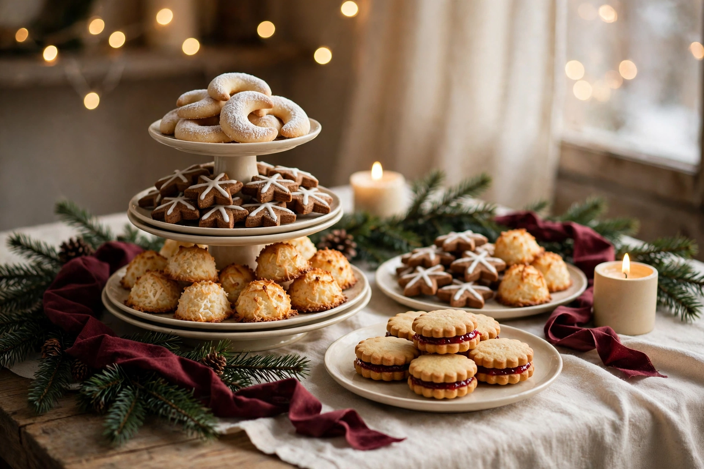
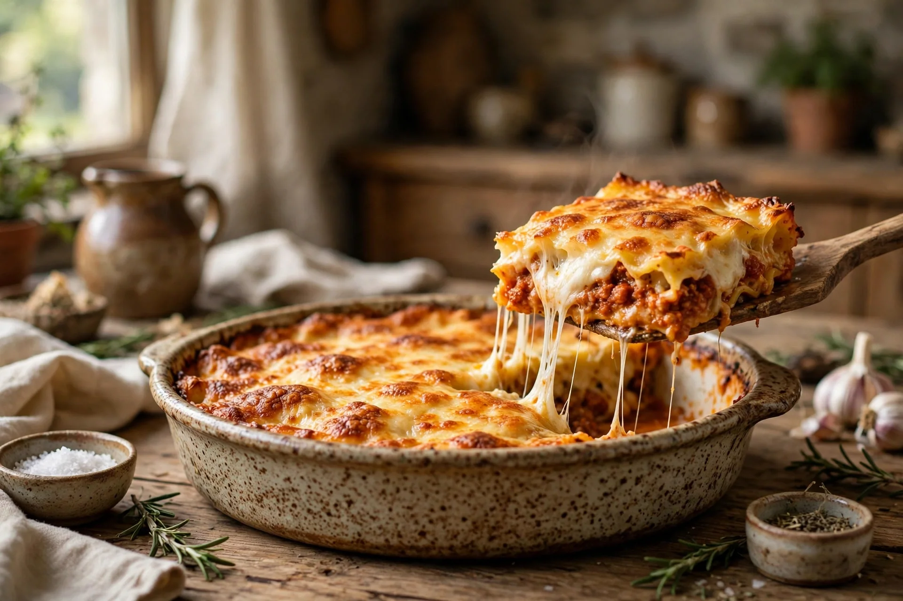
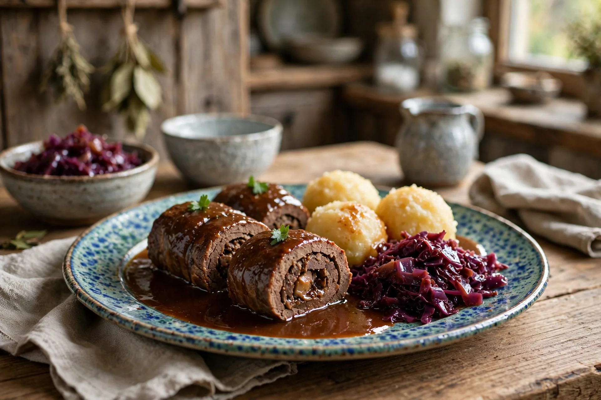

Hey, I'm Anna!
Welcome to my kitchen! Here I share the recipes that have been baked in our family for generations – simply explained, honestly tested and made with lots of love. My motto: good baking needs no complicated ingredients, just a little time and joy.
More about meCategories

PopularCookies
The best cookie recipes for Christmas and the whole year – classics and new ideas.

HeartyMain Dishes
Hearty classics for the whole family – from lasagne to the Sunday roast.

FestiveFor Guests
Festive dishes that impress yet stay relaxed to make.
 Coffee table
Coffee table
Cakes & Tortes
From tray bakes to Black Forest cake – classics for the coffee table.
 Warming
Warming
Soups & Stews
Warming pots for cool days – creamy pumpkin soup and hearty lentil stew.
 Companions
Companions
Sides & Salads
The perfect companions: potato salad, red cabbage, bread dumplings and more.
Latest Recipes
Fresh from Anna's kitchen – all recipes explained step by step.
 Classic
ClassicVanillekipferl, Just Like Grandma's
The classic recipe: tender, crumbly and irresistibly vanilla.
 Classic
ClassicMake Your Own Zimtsterne
The Christmas classic with a moist center and white glaze.
 Basic recipe
Basic recipeButter Cookies for Cutting Out
The basic recipe for the whole family – perfect for decorating.
 With jelly
With jellySpitzbuben (Jam Sandwich Cookies)
Two tender shortcrust cookies with fruity redcurrant jelly in between: these jam sandwich cookies are the …
Klassische Lasagne (Classic Lasagna)
When the lasagna bubbles away in the oven and the kitchen smells of tomato, béchamel and cheese, our whole …
For GuestsSchwarzwälder Kirschtorte (Black Forest Cake)
She is the queen of cakes: chocolate sponge, juicy sour cherries and clouds of whipped cream.
The 10 Best Christmas Cookie Recipes 2026
Our most popular Christmas cookies in one collection.
 Egg-free
Egg-freeCookies Without Egg – 5 Recipes
No egg in the house? These 5 recipes still turn out perfectly.
Why Lecker Rezepte?
Tested & reliable
Every recipe is baked and checked in Anna's kitchen before it lands here.
Step by step
Clear instructions without jargon – suitable for baking beginners too.
Family recipes
Handed-down classics just like Grandma's, with honest tips from experience.